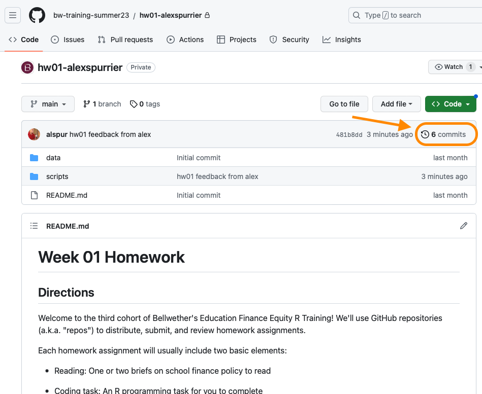
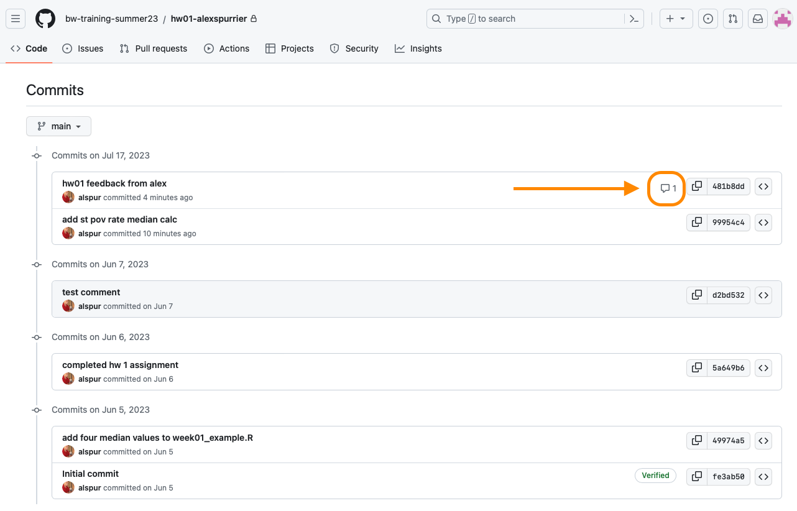
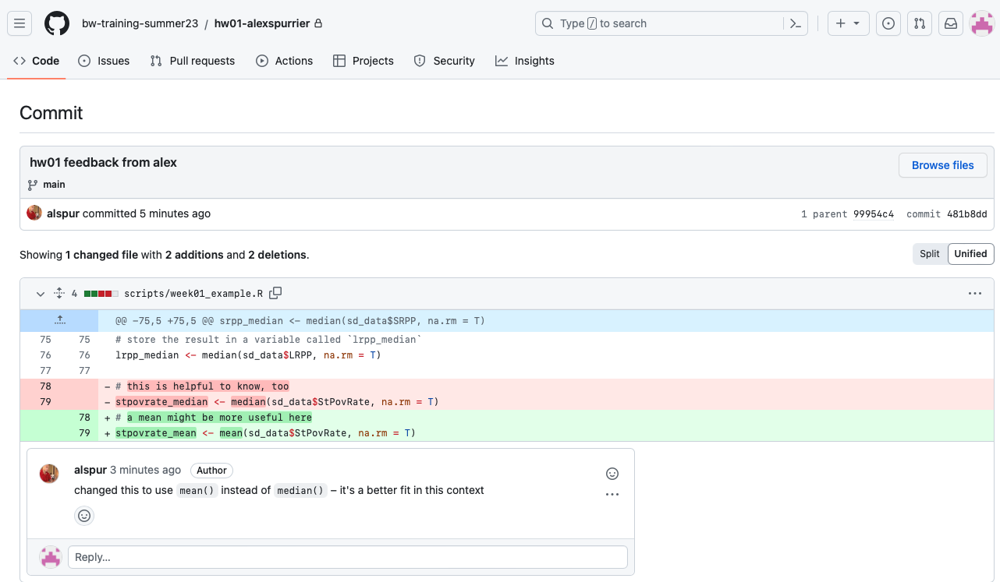
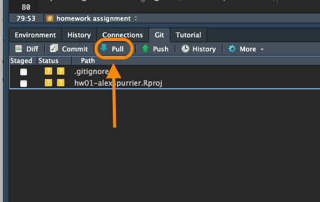
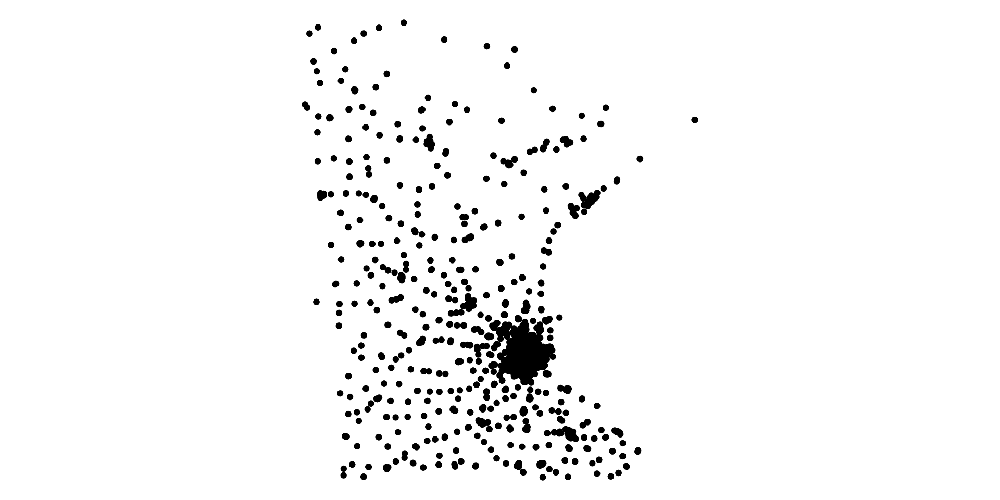
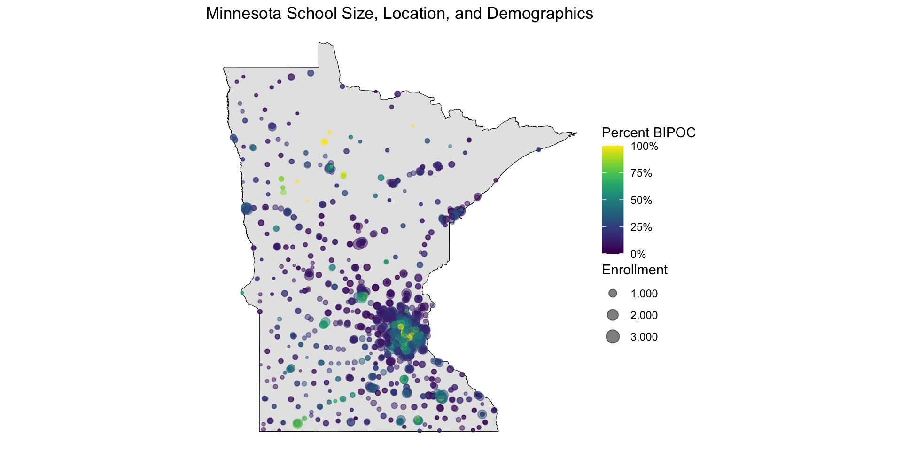
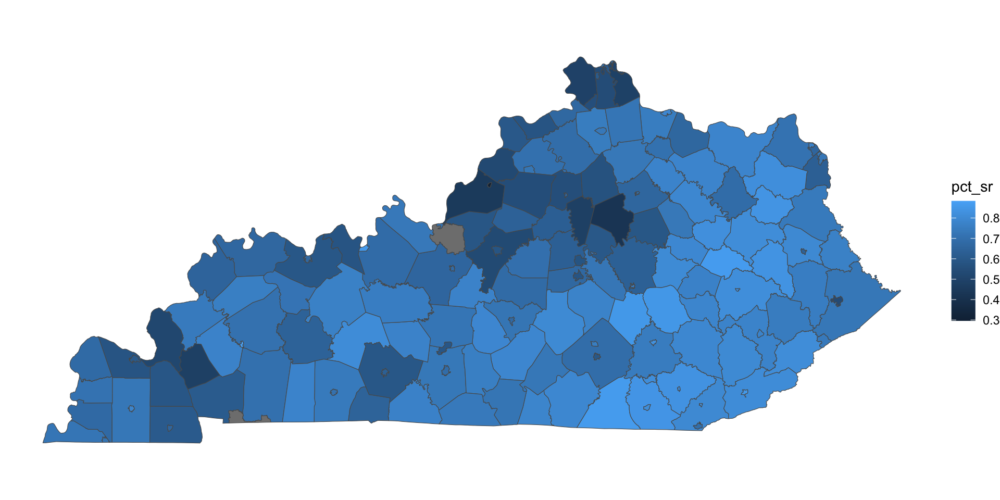
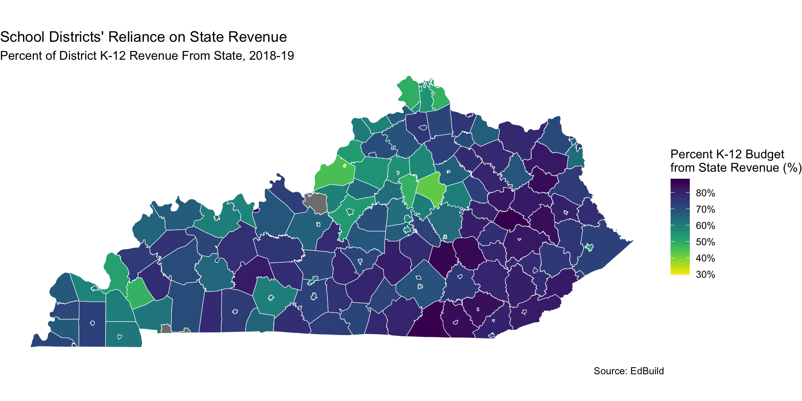
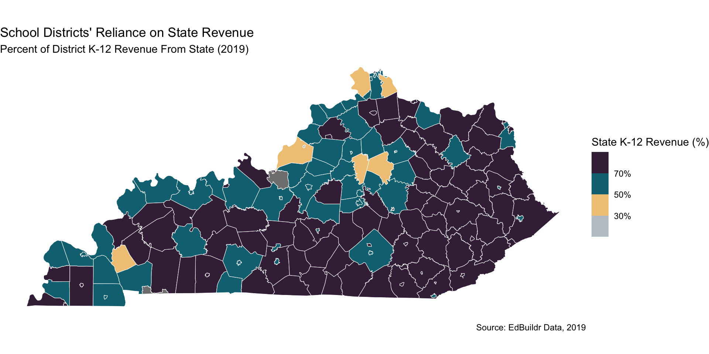
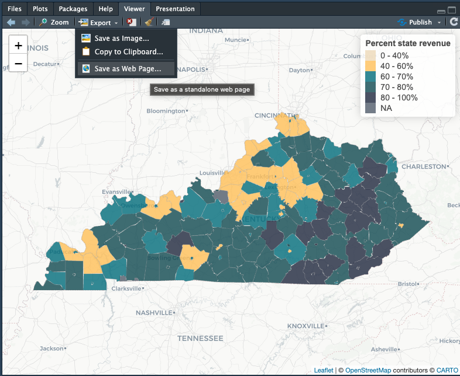

# when reading/writing data, the full file path is not needed
finance_raw <- read_csv("~/Desktop/BW R Course/capstone/data/state_data.csv")
# only include the portion of the filepath that is within your
# project folder, in this case, our project is in the `capstone` folder
finance_raw <- read_csv("data/state_data.csv")
# these are helpful commands to run in the console to check your dfs
# but they don't need to be included in your scripts. if you want to keep
# them in, please comment them out when theyre not in use!
# View(finance_raw)
# names(finance_raw)Mapping in R
Homework Review
Streamlining code in our cleaning scripts
- Initial state data cleaning is looking pretty good!
- There are a few code style practices for us to adopt moving forward:
Viewing homework feedback on GitHub

Viewing homework feedback on GitHub

Viewing homework feedback on GitHub

Additional workflow tips for using git
Be sure to commit and push the data files you’re cleaning and joining!
After Krista or I submit feedback, be sure to click the “Pull” button in your RStudio project to update your code to reflect the changes we’ve made.
Break your commit and push cycles into small but meaningful chunks

Working with pivot_wider()
# load -----
library(tidyverse)
library(readxl)
options(scipen = 999)
mn_grad_fy22_raw <- read_excel("data/2022 Graduation Indicators.xlsx",
sheet = "District", skip = 4)
# clean ----------
# create df of all grad data with cols for each demographic group
mn_all_grad_data_fy22 <- mn_grad_fy22_raw |>
# tidy up column names
rename_with(tolower) |>
rename(county = "county name",
district_number = "district number",
district = "district name",
group_category = "group category",
student_group = "student group",
ending_status = "ending status",
four_year_count = "four year count",
total_cohort_count = "total four year cohort count") |>
# calculate pct of cohort
mutate(cohort_pct = four_year_count / total_cohort_count) |>
select(district_number, district, student_group, ending_status, cohort_pct) |>
pivot_wider(names_from = student_group,
values_from = cohort_pct)
# create df that only includes graduate rate
mn_grad_fy22_2 <- mn_all_grad_data_fy22 |>
filter(ending_status == "Graduate")Introduction to sf
Overview of the sf package
There are many R packages that handle spatial data but
sfis the most modern and easy-to-use.In the
sfpackage, spatial data is represented as a simple feature, which is a set of standards on how to store spatial objects.Spatial data is represented as a data frame with:
A geography column that lists all the coordinates that make up the shape
“Slots” that hold spatial information
Reading and writing functions in sf
sfuses the Geospatial Data Abstraction Library (GDAL)- Use
st_readto import all spatial data
dataframe <- st_read("filepath.filetype")
- Use
st_writeto export all spatial data
st_write(dataframe, "filepath.filetype")
- The filetype indicates the type of file you want to write to your computer - called the driver.
- This will most likely be either a shapefile (.shp) or geojson (.geojson)
Converting lat-long location into simple features
There are a range of shapefiles available that we can use for mapping, but there are cases when we might have other location data, like latitude-longitude pairs, that could be useful to map. The sf package has a helpful function that allows us to convert data in latidude and longitude columns into the simple features format.
Convert a dataframe from lat/long to a simple feature using st_as_sf()
- dataframe
- coords: The columns that define x (latitude) and y (longitude)
- crs: The coordinate system that translate x and y to a location on Earth, provided by using the
st_crs()function. The most commonly used is"EPSG:4326".
example <- st_as_sf(dataframe = df,
coords = c("lat", "long"),
crs = st_crs("EPSG:4326"))In-class exercise: Create a simple features object
Step 1: At the top of your script, load in the sf package and and your clean data into your environment
# load -------
library(tidyverse)
library(sf)
options(scipen = 999)
# Load in the Minnesota schools data
mn_schools <- read_csv(here::here("slides/week_06/data/mn_schools_clean.csv"))
glimpse(mn_schools)Rows: 1,905
Columns: 10
$ school <chr> "112 ALC MIDDLE SCHOOL", "6-12TH GRADE BUILDING"…
$ district <chr> "EASTERN CARVER COUNTY PUBLIC SCHOOL", "CLINTON-…
$ ncesid <dbl> 2708190, 2700150, 2702264, 2700026, 2700026, 273…
$ title_1_school_status <chr> "2-Title I targeted assistance school", "2-Title…
$ lat <dbl> 44.84160, 45.56920, 45.03684, 44.74140, 44.74140…
$ long <dbl> -93.59690, -96.43320, -92.98547, -93.11454, -93.…
$ total_enroll <dbl> 404, 131, 82, 46, 140, 67, 332, 401, 456, 568, 9…
$ bipoc_enroll <dbl> 171, 4, 42, 29, 66, 65, 30, 47, 48, 547, 40, 15,…
$ bipoc_pct <dbl> 0.42326733, 0.03053435, 0.51219512, 0.63043478, …
$ white_enroll <dbl> 233, 127, 40, 17, 74, 2, 302, 354, 408, 21, 50, …In-class exercise: Create a simple features object
Step 2: Turn the Minnesota schools csv file into an sf object using the st_as_sf() function.
# clean -------
# Convert to sf object for mapping
mn_schools_shp <- st_as_sf(mn_schools,
coords = c("long", "lat"),
crs = st_crs("EPSG:4326"))
glimpse(mn_schools_shp)Rows: 1,905
Columns: 9
$ school <chr> "112 ALC MIDDLE SCHOOL", "6-12TH GRADE BUILDING"…
$ district <chr> "EASTERN CARVER COUNTY PUBLIC SCHOOL", "CLINTON-…
$ ncesid <dbl> 2708190, 2700150, 2702264, 2700026, 2700026, 273…
$ title_1_school_status <chr> "2-Title I targeted assistance school", "2-Title…
$ total_enroll <dbl> 404, 131, 82, 46, 140, 67, 332, 401, 456, 568, 9…
$ bipoc_enroll <dbl> 171, 4, 42, 29, 66, 65, 30, 47, 48, 547, 40, 15,…
$ bipoc_pct <dbl> 0.42326733, 0.03053435, 0.51219512, 0.63043478, …
$ white_enroll <dbl> 233, 127, 40, 17, 74, 2, 302, 354, 408, 21, 50, …
$ geometry <POINT [°]> POINT (-93.5969 44.8416), POINT (-96.4332 …Note: The sf dataframe looks like a regular dataframe, except the lat and long columns have been merged into one column, now called geometry
In-class exercise: Create a simple features object
Step 3: Check the projection of your objects using the st_crs() function.
# check ----------
# Check the projection of your objects using the st_crs() function
# QUESTION: Why does this dataframe not have a coordinate system?
st_crs(mn_schools)Coordinate Reference System: NAst_crs(mn_schools_shp)Coordinate Reference System:
User input: EPSG:4326
wkt:
GEOGCRS["WGS 84",
ENSEMBLE["World Geodetic System 1984 ensemble",
MEMBER["World Geodetic System 1984 (Transit)"],
MEMBER["World Geodetic System 1984 (G730)"],
MEMBER["World Geodetic System 1984 (G873)"],
MEMBER["World Geodetic System 1984 (G1150)"],
MEMBER["World Geodetic System 1984 (G1674)"],
MEMBER["World Geodetic System 1984 (G1762)"],
MEMBER["World Geodetic System 1984 (G2139)"],
ELLIPSOID["WGS 84",6378137,298.257223563,
LENGTHUNIT["metre",1]],
ENSEMBLEACCURACY[2.0]],
PRIMEM["Greenwich",0,
ANGLEUNIT["degree",0.0174532925199433]],
CS[ellipsoidal,2],
AXIS["geodetic latitude (Lat)",north,
ORDER[1],
ANGLEUNIT["degree",0.0174532925199433]],
AXIS["geodetic longitude (Lon)",east,
ORDER[2],
ANGLEUNIT["degree",0.0174532925199433]],
USAGE[
SCOPE["Horizontal component of 3D system."],
AREA["World."],
BBOX[-90,-180,90,180]],
ID["EPSG",4326]]In-class exsercise: Mapping with geom_sf()
# plot ---------------
# simple plot of sf data
ggplot(mn_schools_shp) +
geom_sf() +
theme_void()
In-class exsercise: Mapping with geom_sf()
- The
tigrispackage provides access to a range of shapefiles from the U.S. Census Bureau - Using the
states()function, we can download state outlines and then filter for the state we want to use. - Setting the
cbparameter of thestates()function toTRUEwill provide the most generally recognized shape file.
# get state outline from tigris ----------
library(tigris)
mn_outline <- states(cb = TRUE) |>
filter(NAME == "Minnesota")In-class exsercise: Mapping with geom_sf()
library(scales)
library(viridis)
# plotting multiple geom_sf layers ---------
ggplot() +
geom_sf(data = mn_outline, color = "black") +
geom_sf(data = mn_schools_shp,
# we can use aes() to map data just like with geom_point()
aes(size = total_enroll,
color = bipoc_pct),
alpha = .5) +
scale_color_viridis(labels = percent_format()) +
scale_size_area(max_size = 5,
labels = comma_format()) +
labs(color = "Percent BIPOC",
size = "Enrollment",
title = "Minnesota School Size, Location, and Demographics") +
theme_void()
Making maps with edbuildmapr
Review: Overview of the edbuildr package
- The goal of
edbuildris to import EdBuild’s master dataset that includes school district finance, student demographics, and community economic indicators for every school district in the United States. - The master dataset is available for any school year from 2013 to 2019 or longitudinally for all years 2013-2019.
- School year is identified by the end year. For example, the 2018-19 school year is 2019.
- The master dataset is build from the:
- U.S. Census Bureau
- Annual Survey of School System Finances (F33), and
- join data from the National Center for Education Statistics, Common Core of Data (CCD), Small Area Income and Poverty Estimates (SAIPE), and Education Demographic and Geographic Estimates (EDGE).
edbuildmapr makes it easier to perform spatial analysis of education data
- R can use objects called “shapefiles” to create maps
- The
edbuildmaprpackage makes it easy to produce high-quality maps as you analyze school finance data. - To get started, you will need to install two packages:
edbuildmapr: Simplifies the use of school district shapefiles.sf: Standardizes how to encode spatial vector data.
LIVE CODING EXAMPLE: Making a state map with edbuildmapr
Step 1: Load in packages and data from edbuildmapr and edbuild
# load -------
options(scipen = 999)
library(edbuildr)
library(edbuildmapr)
library(viridis)
library(scales)
# load in the school district mapping data
sd_map_raw <- sd_shapepull(data_year = "2019", with_data = TRUE)Reading layer `shapefile_1819' from data source
`/private/var/folders/8n/xvlf4d6n1c12rf9hhcl03tp80000gn/T/Rtmp3ZLwqT/filee00279a415d/shapefile_1819.shp'
using driver `ESRI Shapefile'
Simple feature collection with 13315 features and 6 fields
Geometry type: MULTIPOLYGON
Dimension: XY
Bounding box: xmin: -179.1686 ymin: -14.54858 xmax: 179.7487 ymax: 71.38961
Geodetic CRS: NAD83# load in raw district finance data
dist_data_raw <- masterpull(data_type = "geo")LIVE CODING EXAMPLE: Making a state map with edbuildmapr
Step 2: Filter for your state, create a new variable, and join the data
# filter mapping data for your state
state_shp_raw <- sd_map_raw |>
# tidy up colnames
rename_with(tolower) |>
filter(state == "Kentucky") |>
rename(ncesid = geoid) |>
rename_with(tolower) |>
select(ncesid, geometry)
# filter state finance data for your state
state_data <- dist_data_raw |>
rename_with(tolower) |>
filter(state == "Kentucky")
# join data
state_shp <- state_shp_raw |>
left_join(state_data, by = "ncesid") |>
mutate(pct_sr = srpp / slrpp)LIVE CODING EXAMPLE: Making a state map with edbuildmapr
Step 3: Plot a basic map
# plot a basic map
ggplot() +
geom_sf(data = state_shp, aes(fill = pct_sr)) +
theme_void()
LIVE CODING EXAMPLE: Making a state map with edbuildmapr
The map looks okay, but there is a lot we can improve!
Step 4: Make several aesthetic changes
- Change the color of the lines to white within
geom_sf() - Reverse the direction of the color scale within
scale_fill_viridis() - Add a title, subtitle, and source caption within
labs()
# load -------
# Make several aesthetic changes
ggplot() +
geom_sf(data = state_shp,
aes(fill = pct_sr),
color = "#ffffff") +
theme_void() +
scale_fill_viridis(name = "Percent K-12 Budget\nfrom State Revenue (%)",
labels = percent_format(accuracy = 1),
direction = -1) +
labs(
title = "School Districts' Reliance on State Revenue",
subtitle = "Percent of District K-12 Revenue From State, 2018-19",
caption = "Source: EdBuild")
LIVE CODING EXAMPLE: Making a state map with edbuildmapr
Step 5: Make your own color palette and create bins to more clearly break up your data!
# load -------
# create custom color palette
bw_state_revenue <- c("#BEC6CE", "#FFC762", "#007786", "#212B46", "#6D1E4A")
# plot another nicely-formatted map
ggplot() +
geom_sf(data = state_shp,
aes(fill = pct_sr),
color = "#ffffff") +
theme_void() +
scale_fill_stepsn(breaks=c(0, .3, .5, .7, 1), # Breaks up the data
colors = bw_state_revenue,
name="State K-12 Revenue (%)",
labels=percent_format(accuracy = 1L)) +
labs(
title = "School Districts' Reliance on State Revenue",
subtitle = "Percent of District K-12 Revenue From State (2019)",
caption = "Source: EdBuildr Data, 2019")
You can export your map like any other plot via ggsave()
State Group Activity: Making maps with edbuildr data
- Clone the
hw06-repo, which should be available via GitHub. - Open this example script:
scripts/edbuildmapr_example.R. - In small groups or your state teams, pull in data from
edbuildrandedbuildmaprfor your state and create a map! - Play around with the colors, fills, and variables.
- Be prepared for at least one person in your group to share their map!
Alex and Krista will be circulating to answer questions. Feel free to also come back into the main room if you have questions!
Break
10:00
Introduction to the leaflet package
leaflet is an interactive mapping package
- The
leaflet()function creates a blank, interact map canvas in your RStudio viewer pane - Based on
leaflet.js, which is a javascript library.- Most common javascript library for making maps
- You can add elements to the map canvas using the generic
addControl()function:addProviderTiles(): Add a basemapaddCircleMarker()andaddMarker(): Adds a point layeraddPolylines(): Adds a line layeraddPolygons(): Adds a polygon layer
In-class exercise: Mapping with leaflet
Step 1: Load packages and then download and clean data
# load -------------
library(tidyverse)
library(edbuildr)
library(edbuildmapr)
library(viridis)
library(scales)
library(sf)
library(leaflet)
# load in the school district mapping data
sd_map_raw <- sd_shapepull(data_year = "2019", with_data = TRUE)
dist_data_raw <- masterpull(data_type = "geo")
# clean ----------------
# filter mapping data for your state
state_shp_raw <- sd_map_raw |>
# tidy up colnames
rename_with(tolower) |>
filter(state == "Kentucky") |>
rename(ncesid = geoid) |>
rename_with(tolower) |>
select(ncesid, geometry)
# filter finance data for your state
state_data <- dist_data_raw |>
rename_with(tolower) |>
filter(state == "Kentucky")
# join data
state_shp <- state_shp_raw |>
left_join(state_data, by = "ncesid") |>
mutate(pct_sr = srpp / slrpp) |>
st_transform(st_crs("EPSG:4326"))In-class exercise: Mapping with leaflet
Step 2: Create leaflet map with a base layer
# load -------
library(leaflet)
# Create a leaflet map with a base layer
leaflet() |>
addProviderTiles(provider = "CartoDB.Positron") There are many base layer options available for leaflet; check them out here.
In-class exercise: Mapping with leaflet
Step 3: Add a layer of district shapes as polygons
# add district shapes
leaflet() |>
addProviderTiles(provider = "CartoDB.Positron") |>
addPolygons(data = state_shp)In-class exercise: Mapping with leaflet
Step 4: Define the color and border thickness of polygons
# define the color and thickness of borders
leaflet() |>
addProviderTiles(provider = "CartoDB.Positron") |>
addPolygons(data = state_shp,
color = "#ababab",
weight = .5)Adding a popup to your leaflet map
The popup parameter defines the text that displays when you click on an object in your leaflet map.
- Combine reactive data elements with text using the paste0() function
popup = paste0("School: ", ga_schools_shp$school, "<br> Enrollment: ", ga_schools_shp$total_enroll)
In-class exercise: Mapping with leaflet
Step 5: Add a popup layer
# add a popup layer
leaflet() |>
addProviderTiles(provider = "CartoDB.Positron") |>
addPolygons(data = state_shp,
color = "#ababab",
weight = .5,
popup = paste0("District: ",
str_to_title(state_shp$name),
"<br> Enrollment: ",
comma(state_shp$enroll),
"<br> Percent state revenue: ",
percent(state_shp$pct_sr, accuracy = .1)))There are many other parameters you can style in your leaflet map
stroke: Outline of the circles or polygonscolor: Outline colorweight: Thickness of the outlineopacity: Transparency out the outline from 0 (transparent) to 1 (opaque)fill: Inside of the circle or polygonfillcolor: Inside color
In-class exercise: Mapping with leaflet
Step 6: Create a more advanced map with dynamic fill and a legend
# advanced leaflet example ------------------
bw_primary <- c("#6D1E4A", # 1 plum
"#007786", # 2 teal
"#0D525A", # 3 dark green
"#212B46", # 4 navy
"#5A6675", # 5 grey
"#F0DEC1") # 6 cream
bw_secondary <- c("#FFC762", # 1 yellow
"#FFB653", # 2 orange
"#BEC6CE", # 3 light grey
"#2E1A4A", # 4 deep purple
"#7EA2D1", # 5 soft blue
"#CAD3FB", # 6 lavender
"#9CD4EA", # 7 sky
"#FFA497") # 8 peach
# define breaks for fill variable
state_rev_breaks <- c(0, .4, .6, .7, .8, 1)
# define custom color palette
bw_scale <- c(bw_primary[6],
bw_secondary[1],
bw_primary[2],
bw_primary[3],
bw_primary[4])
# create color palette object
state_rev_palette <- colorBin(palette = bw_scale,
domain = state_shp$pct_sr,
bins = state_rev_breaks,
na.color = bw_primary[5])
# create advanced leaflet map
leaflet() |>
addProviderTiles(provider = "CartoDB.Positron") |>
addPolygons(data = state_shp,
color = "#ababab",
weight = .5,
popup = paste0("District: ",
str_to_title(state_shp$name),
"<br> Enrollment: ",
comma(state_shp$enroll),
"<br> Percent state revenue: ",
percent(state_shp$pct_sr, accuracy = .1)),
fillColor = ~ state_rev_palette(pct_sr),
fillOpacity = .8) |>
addLegend("topright",
opacity = .8,
pal = state_rev_palette,
values = state_shp$pct_sr,
labFormat = labelFormat(
suffix = "%", between = " - ",
transform = function(x) 100 * x
),
title = "Percent state revenue")Exporting a leaflet map
Any map you generate with
leafletcan be exported as a standalone HTML document.Without too much effort, you can publish this map yourself on GitHub (we can help you do this), embed it as an iframe on an existing webpage, or publish it as a standalone webpage. Those last two options may require support from your organization’s web developer.

Homework
Reading
Coding Task
Use the hw06_map_template.R file in the /scripts folder to complete the following tasks:
- Create at least three production-quality maps of district-level finance data for your state.
- Ensure that at least one of your maps includes state per-pupil funding as the
fillvariable. - Be sure to use the
ggsave()commands to save your final maps in the/figuresfolder.